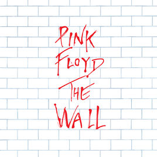

In 1967 the band brought in David Gilmour; their fifth member. Gilmour, having already studied at Cambridge with Syd Barrett was brought in to replace Barrett and guitarist and lead singer whilst Barrett would write the songs. In 1968 the band went to record their second album "Saucerful Of Secrets" which would be Barrett's last contribution to the band before he departed. After Barrett was kicked due to mental illness the band moved on to more experimental music with albums such as Ummagumma, Atom Heat Mother and Meddle. This was the bad trying to find their own sound and departing from Psychedelic music. After Meddle came "Obscured by Clouds" which, ironically became obscured by their next album. Dark Side Of The Moon, which came to be the second most sold album of all time. This was the band finding their own sound and features classics such as "Time" and "Money".
After DSOTM, they released Wish You Were Here. A tribute to Syd. With songs that resonates with everyone and others describing the music industry as a machine and a "gravy train". Then came Animals. Similar to George Orwell's "Animal Farm" they represent Capitalism as Sheep's (the common people) Dogs (Business Men) and Pigs (The Government and bankers). Next came The Wall. Mostly written by Roger Waters, it was a rock opera that told the story of Pink and his descent into madness. This album gave us Comfortably Numb and Another Brick in the Wall, which are some of Floyd's most well known sounds. However, the band was breaking apart at this point due to Waters. The next album was The Final Cut which features leftovers of the Wall and was extremely political.
Roger left the band in 1985 and starting to release his own albums. The rest of the band continued under the name of Pink Floyd and released more albums. Their first album without Water's was "A Momentary Lapse of Reason" which sounded very different to their last few albums. Next came The Division Bell which same as A Momentary Lapse Of Reason, sounded very different. The bands next album came out in 2104 which was titled The Endless River. Unfortunately, Richard Wright, one of the founding members and pianist had passed away in 2008. Just after their live 8 performance in which they all returned to play, one last time.
